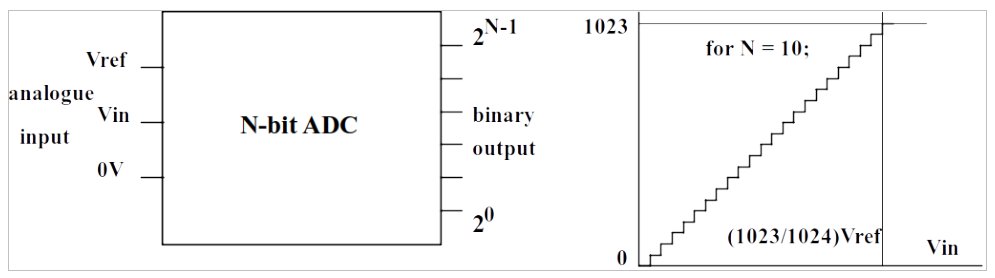
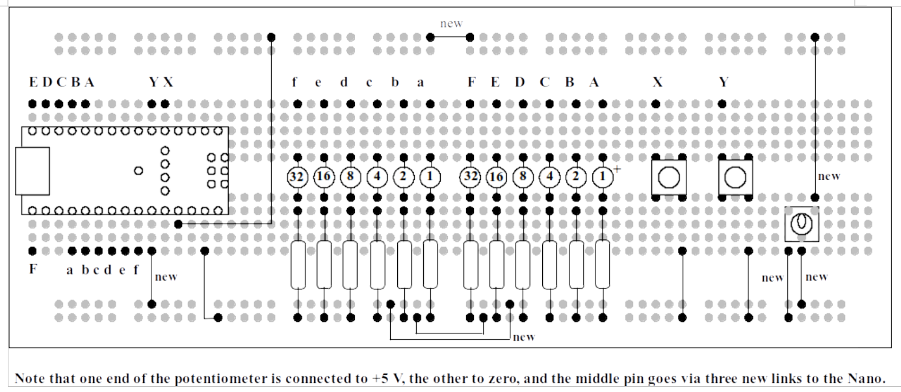
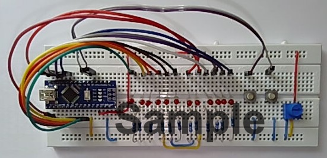

Experiment 3: Analogue to Digital Conversion#
Analogue to Digital Conversion#
It has been said many times that we live in a digital world. This is not true! We live in an analogue world, filled with voltages, currents, temperatures, pressures – all quantities which vary continuously and can be measured with great accuracy. The digital world wants everything neat and tidy, on or off, hot or cold, zero or one: which is not necessarily compatible with the analogue world. In order to access analogue information in a digital system, an Analogue to Digital Converter (ADC) is needed.
{kind=link}

Fig. 151 Analogue to Digital Conversion#
The transfer characteristic of a 10-bit ADC is shown in the Fig. 151 above. Let us suppose that the analogue input voltage, Vin, can be anywhere between zero Volts and Vref. As \(V_\mathrm{in}\) increases, the binary output varies from all zeros when \(V_\mathrm{in} = 0\), and all ones when \(V_\mathrm{in} = V_\mathrm{ref}\).
Now, the previous statement is only 99.9% true, as will be explained. Suppose \(V_\mathrm{ref} = 5\) V. Then each step shown on the graph above, is equivalent to \((5\,\mathrm{V} / 1024)\) which is (nearly) 5 mV. So the maximum voltage that can be measured is not, strictly, \(V_\mathrm{ref}\), it is \(V_\mathrm{ref}\) minus one step! In our example, that will be \((5\,\mathrm{V} - 5 \mathrm{mV})\) which is a tiny fraction over 4.995 V.
The primary characteristic of an ADC is this figure N, the number of bits. It tells us the RESOLUTION of the ADC. Another important characteristic is the conversion time, which determines how many conversions can be performed per second.
Some examples of ADCs. Suppose we want an ADC to convert high quality digital audio signals. Then the minimum value of N would be 16, in order to give an acceptable resolution. With N = 16, there will be 216 steps on the conversion graph, which is 65,536. The conversion speed is related to the audio bandwidth required. Most computers and tablets use ADCs which give 48,000 samples per second, which is \(22\,\mu\mathrm{s}\) per conversion. This is a high specification, as it is necessary in order to produce clean digitised audio with a high bandwidth.
That was the “Rolls-Royce” ADC. Suppose we need an ADC capable of digitising audio for a telephone line. The bandwidth of the audio signal on telephone lines is typically 3.5 kHz, and the internationally agreed conversion speed is 8000 conversions per second, corresponding to 125 us per conversion. The resolution need only be 8 bits to give acceptable telephone quality, corresponding to 28 = 256 steps. So the ADC needed for telephone quality has a much lower specification than the one for high quality digital audio. We shall not extend the metaphor of the make of motor car, in case of legal action.
The ADC inputs on our Arduino Nano are 10 bits resolution and can be sampled at a maximum of about 10 kHz, so they easily meet the specification for telephone lines on speed and resolution but are a bit short of the resolution and speed for high quality audio.
Reading an Analogue Input#
The Analogue to Digital Converter on the Arduino Nano has six inputs
which are shared with other functions, and two inputs which are
exclusively analogue inputs. The command to read from an analogue input
is of the form analogRead(), where the brackets contain an expression
which specifies the analogue input. Note that the hardware only permits
one conversion at a time, so if we want to read the value from all eight
inputs this will require eight separate analogRead() instructions.
This can be an issue if we need to read several voltages simultaneously,
which requires additional hardware external to the Arduino Nano.
If you look in Listing 6: Simple application of analogRead()., you will find a simple programme which
repeatedly reads from analogue input 6 (A6) and displays the value on
the LEDs. The source of the voltage to be measured is from a
potentiometer, which is a resistor with a moving contact which can be
used to give a fraction of the voltage across the ends. As the wheel on
the potentiometer is rotated, the fraction of the voltage varies from
zero to 100%.
There is a slight problem. There are only six LEDs connected to Port C,
which gives a maximum number of \((2^6 - 1) = 63\). However, the number
read from the ADC has a maximum value of \((2^{10} - 1) = 1023\). So,
as a “cheat”, the value of analogRead() is divided by 16 so that it
fits!
Modify the plug-in breadboard by adding the supplied potentiometer and connecting it as shown in Fig. 152, using wire links cut from the supplied single-core cable using the wire cutter and stripper. Don’t forget to wear eye protection when cutting the wires!
{kind=link}

Fig. 152 Circuit layout for Experiment 3.#
Create an Arduino sketch in the usual way and copy the code from Listing 6: Simple application of analogRead(). into it. Compile and download the code. When the programme is running, turn the potentiometer slowly. You will see the LEDs light up in a binary sequence, so that no LEDs are illuminated when the wheel is fully anticlockwise, and all the LEDs are illuminated when the wheel is fully clockwise. Try and find a position where the LEDs change over from 011111 (31 decimal) to 100000 (32 decimal). This should be exactly half-way between the extreme positions.
Bar Graph Display#
The next demonstration programme is of a bar graph display. Instead of illuminating in a binary sequence, the LEDs light progressively from one end to the other in the same way as the volume indicator on digital record and playback equipment. The number from the ADC has a maximum value of 1023, and there are only six LEDs. So the number from the ADC must be scaled. Let us pretend that 1024/6 = 170.
ADC = 0; no LEDs lit.
ADC = 1 to 170: one LED lit.
ADC = 171 to 341: two LEDs lit.
ADC = 342 to 512: three LEDs lit.
ADC = 513 to 683: four LEDs lit.
ADC = 684 to 853: five LEDs lit.
ADC = 854 to 1023: six LEDs lit.
How are we to make this set of decisions? One solution would be to use a
series of if() statements, however some slight additions are needed.
We actually need an if() … else statement, so that only one of the
conditions causes a write to the LEDs. If you look at the programme in
Listing 7: Bar Graph display with six LEDs, you will see that it begins its tests with the highest
threshold and progresses down in steps of 170 until zero.
Copy/paste the programme into an Arduino sketch, compile and test. As you rotate the wheel on the potentiometer clockwise, progressively more LEDs will light. If you balance the setting so that it is just changing over from three LEDs to four, this is exactly halfway on the potentiometer (arrow pointing upwards).
An Exercise for the Reader#
Now that we are familiar with the concept, let us write a programme to illuminate all twelve LEDs as a bar graph. The following changes will need to be made to the programme in Listing 7: Bar Graph display with six LEDs:
Both Port B and Port C will need to be updated after each
if() statement, e.g.
PORTC = 0b00000011;
PORTB = 0b00111111;
will result in the top two LEDs off, all other LEDs on.
The threshold numbers will go up in steps of \((1024 / 12)\) which is approximately 85.
Create a new Arduino sketch and modify the programme from Listing 7: Bar Graph display with six LEDs. When you test it, the LEDs should light progressively as the potentiometer is rotated clockwise. When the potentiometer is at the extreme anticlockwise position, all LEDs will be out.
Assessment of Experiment 3#
Add a sub-title “Experiment 3” to your lab diary, and include the following:
A photo of the modified breadboard, with the potentiometer added. Don’t forget to include identification.
A listing of your programme for An Exercise for the Reader above, with comments as appropriate.
Appendix A: Code listings#
Listing 6: Simple application of analogRead().#
View or download code from GitHub Gist analog.ino
Listing 7: Bar Graph display with six LEDs#
View or download code from GitHub Gist bar_graph.ino
Appendix B: Photographs#
The following photograph (Fig. 153) has been provided by Dr Davies who created this experiment.
{kind=link}

Fig. 153 Photograph of the plug-in breadboard after completing Experiment 3.#